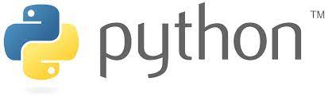
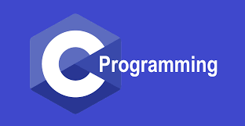
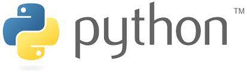
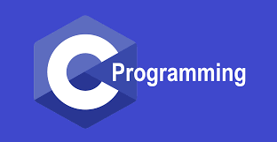
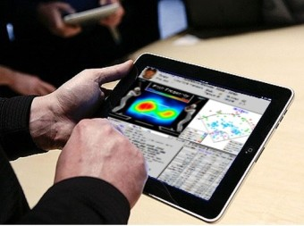
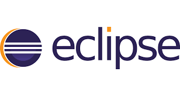
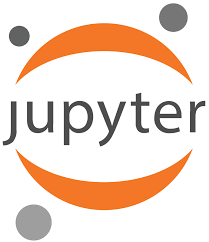
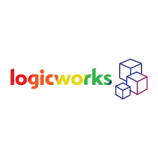
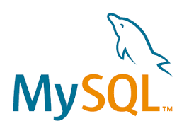
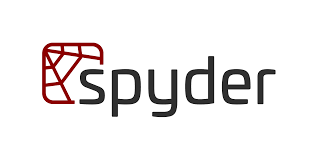

Skills
|  | |
|  | |
 |
|
|  | |
|  | |
|
|
SW실전영어
-SW/IT 관련 전문서적, 논문, 신문기사, 온라인 미디어 등 영어로 전달되는 전공 지식/정보를 이해하는 기술을 배웠다.
-해외 기업과의 협업 시 필요한 영어 의사소통 및 정보전달 기술을 배웠다.
자바프로그래밍
- 프로그램을 개발 하는 절차와 방법을 이해할 수 있다.
- 객체지향의 개념과 객체지향 프로그램의 구조와 특징을 이해할 수 있다.
- 실습과 과제를 통해 문제 해결 능력을 향상시켰다.
컴퓨팅사고와 문제해결
- 컴퓨팅 사고와 문제해결 방법의 필요성을 이해했다.
- 논리적 문제 해결을 위한 파이썬 프로그래밍 실습을 진행했다.
창의코딩앱
- JAVASCRIPT 문법구조를 이해함.
- 웹을 다양한 이벤트로 구현가능함.
데이터로보는세상
- 파이썬 프로그램의 기초 문법을 이해함.
- 다차원 데이터에 대한 효과적인 처리 방법 및 정량적 데이터 표현 방법을 배웠음.
자료구조와 알고리즘
-스택, 큐, 트리, 힙, 그래프의 지식 및 구현 능력을 배웠음.
논리설계와 컴퓨터구조
-컴퓨터 시스템을 이루고 있는 CPU,I/O DEVICE 등 다양한 장치간의 연관성을 이해함.
-logicworks를 이용해서 논리회로를 설계해서 시계나 신호등을 제작함.
파이썬과학기초프로그래밍
-jupyter를 이용해서 python언어로 과학/공학 시뮬레이션에 데이터 구조와 함수 사용법을 익힘.
웹프로그래밍
-HTML,CSS,JavaScript의 기본적인 기술을 적용할수있고 설계하는법을 배움.
선형대수학
-선형방정식, 벡터, 행렬 등을 이용한 해석 방법의 기본 원리와 차이점 등을 배움.
디지털 그래픽활용
-Adobe Photoshop 2022를 이용해서 기본적인 방법과 포스터 등 자유로운 이미지 제작을 할수있음.
수학적 논리를 통한 전략적사고
-대기업 취업문제로 사용되는 문제들을 풀어보면서 창의력을 기름.
스포츠와 인성함양
-스포츠와 인성에 관련해서 봉사 등 실천을 하면서 다양한 부분에서 인성실천을 했음.
생활속의 통계학
-생활 속에 자주 등장하는 통계에 대해 분석하고 토의하는 법을 배움.
중국어1
-기본적인 인사 등 중국어를 배워서 실전에 쓸 수있는 능력을 기름.
|  | ||
| 인공지능 기술을 이용한 자동차 제작 | 머신러닝을 이용한 금융 | 빅데이터를 이용한 스포츠 분석 |


|
||
 |
 |  |
|   | ||